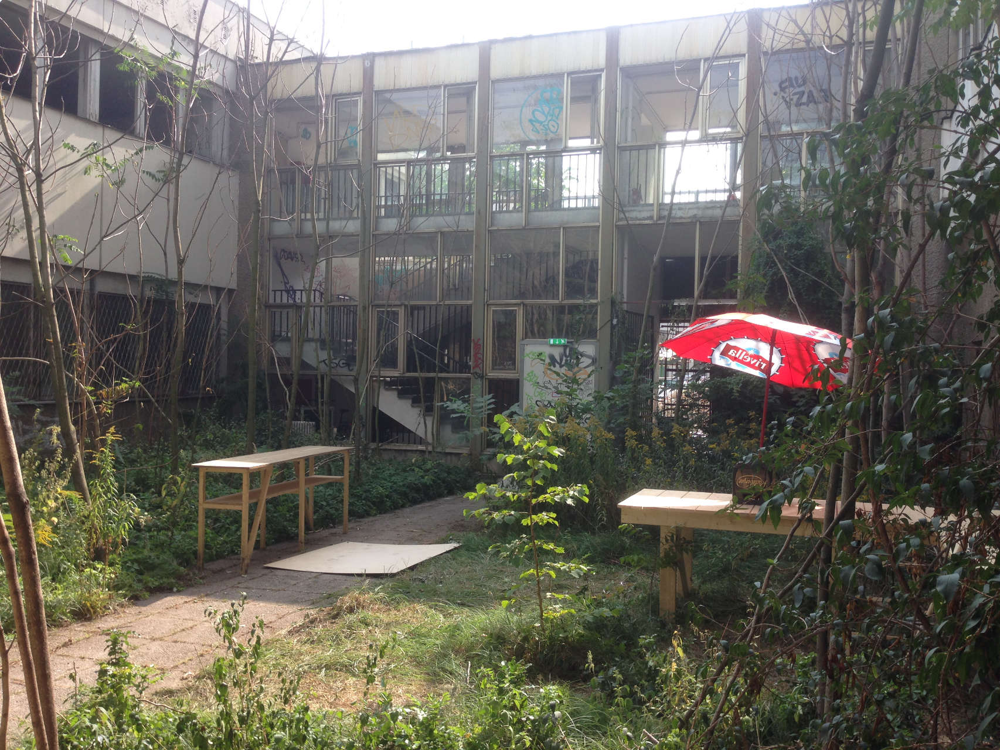
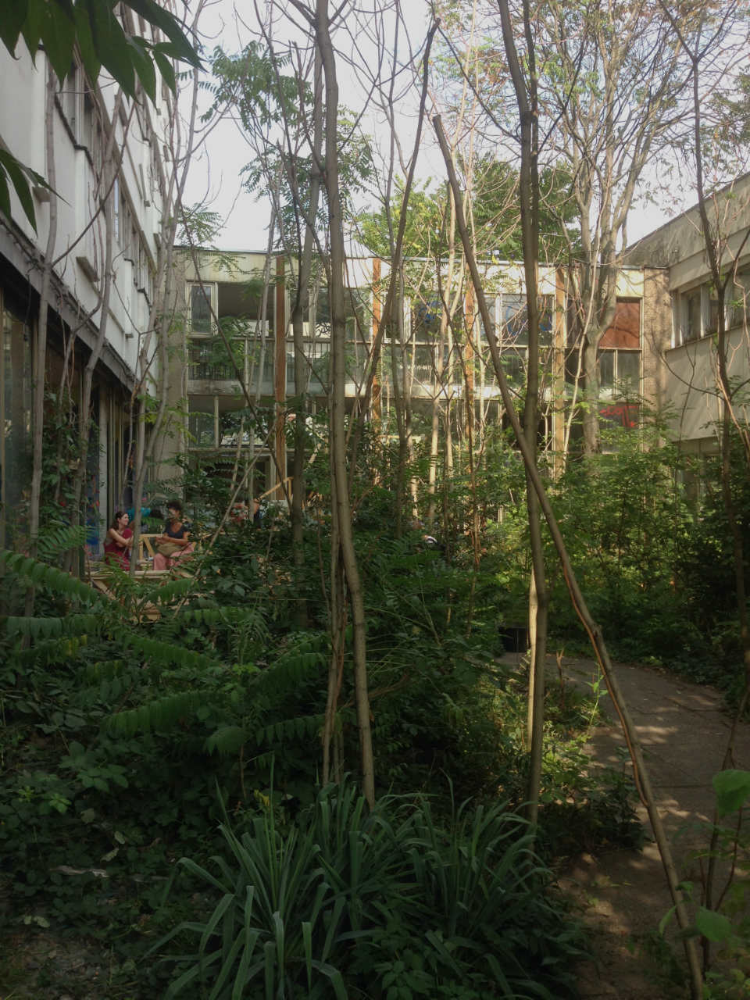
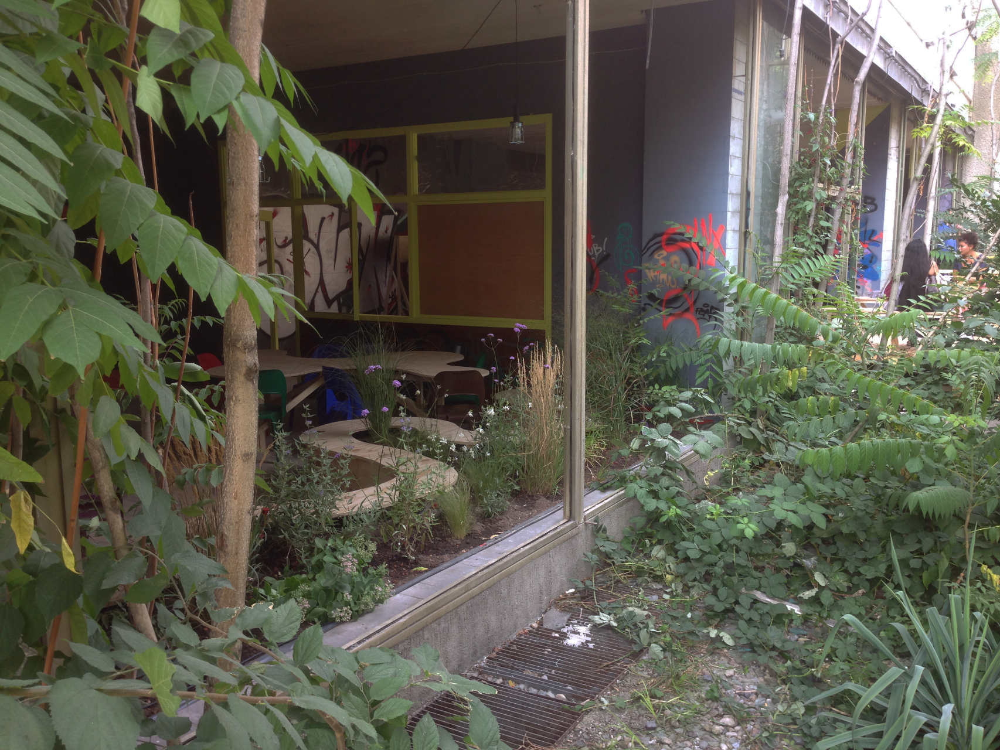
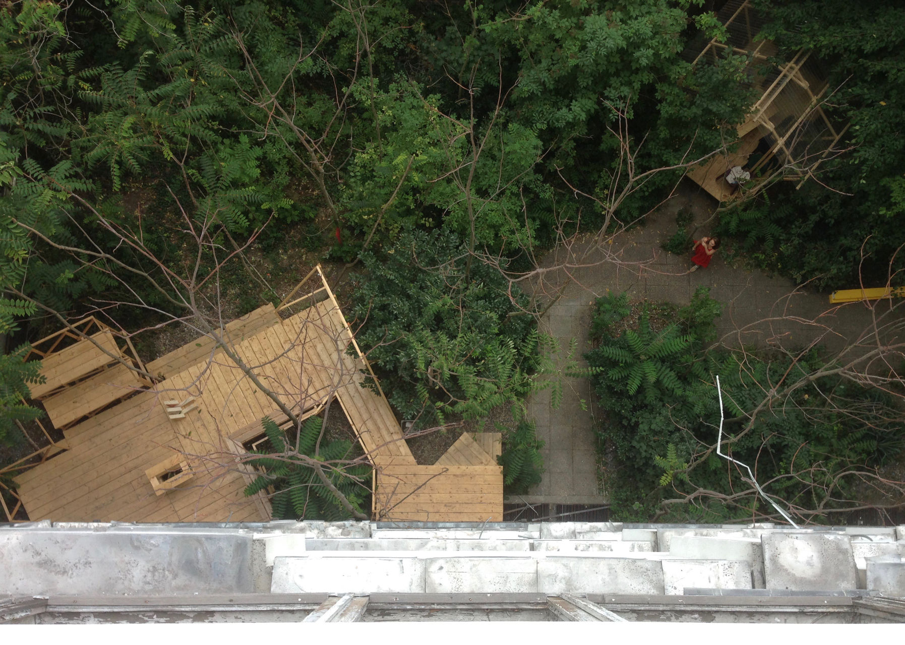
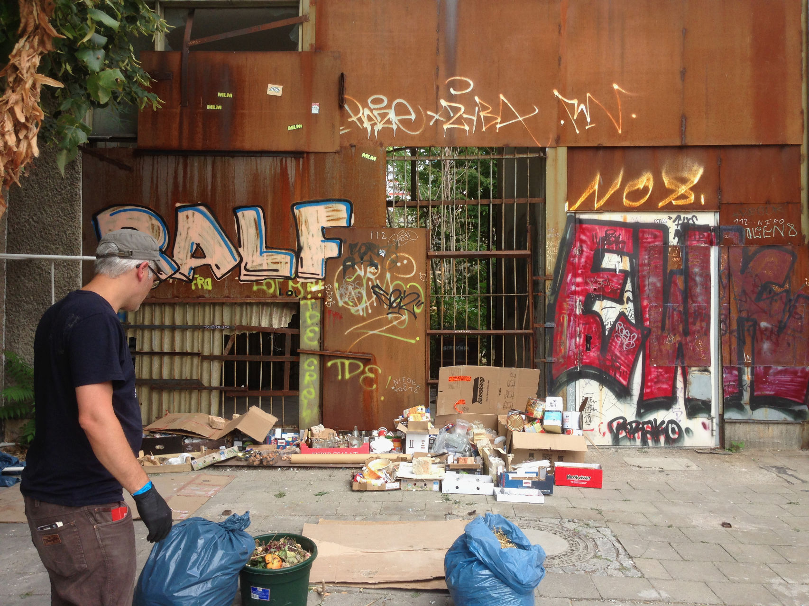
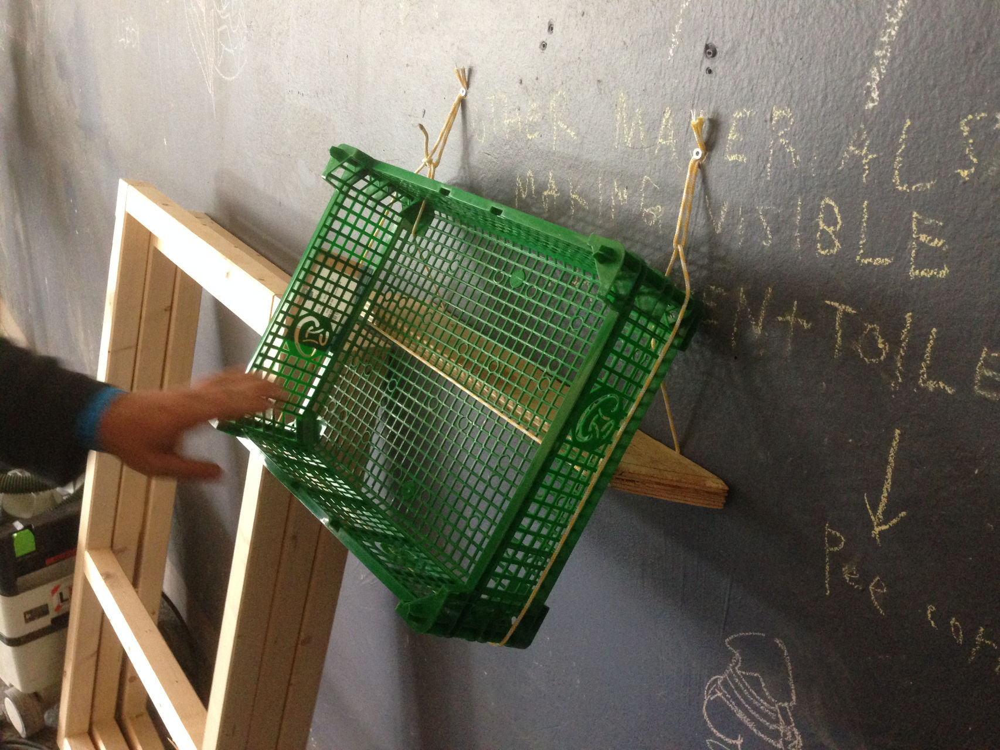
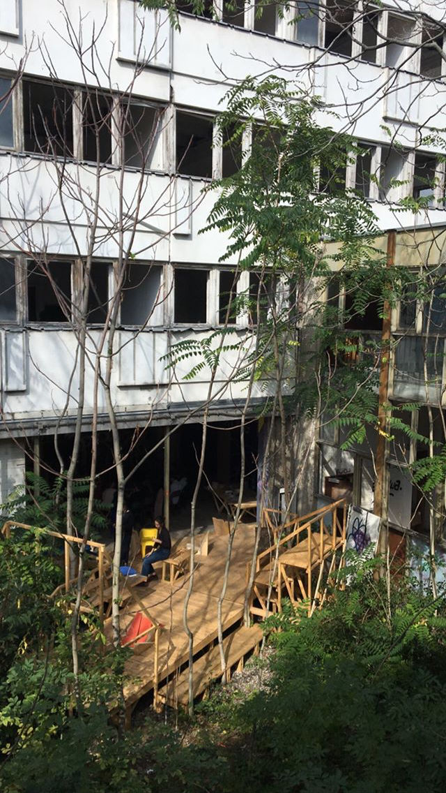
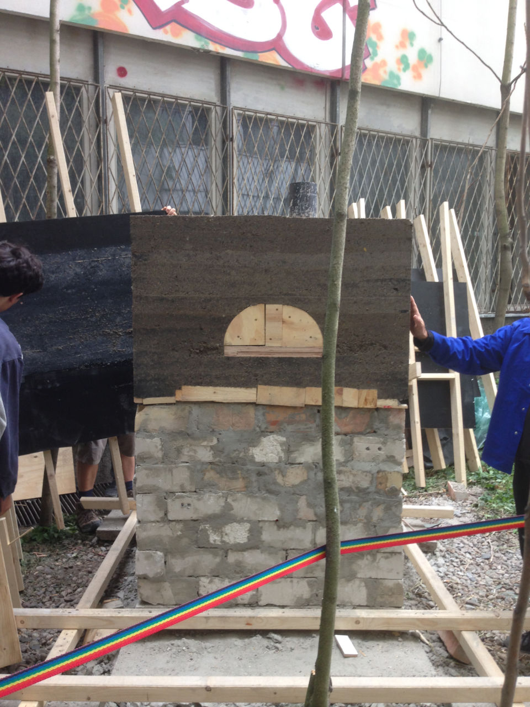
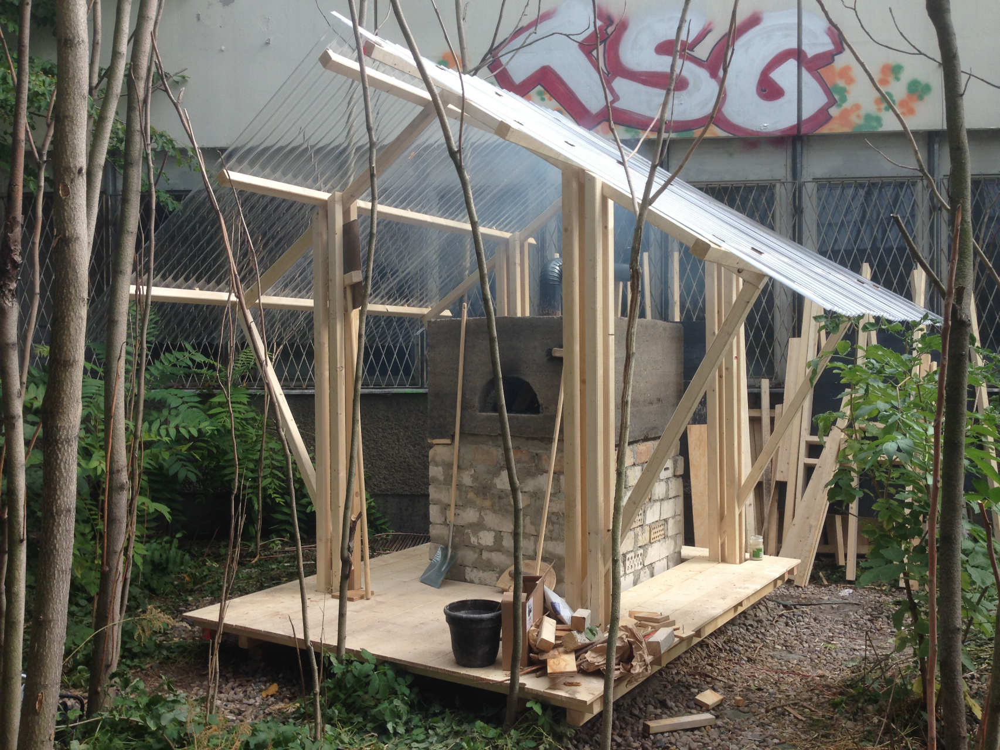
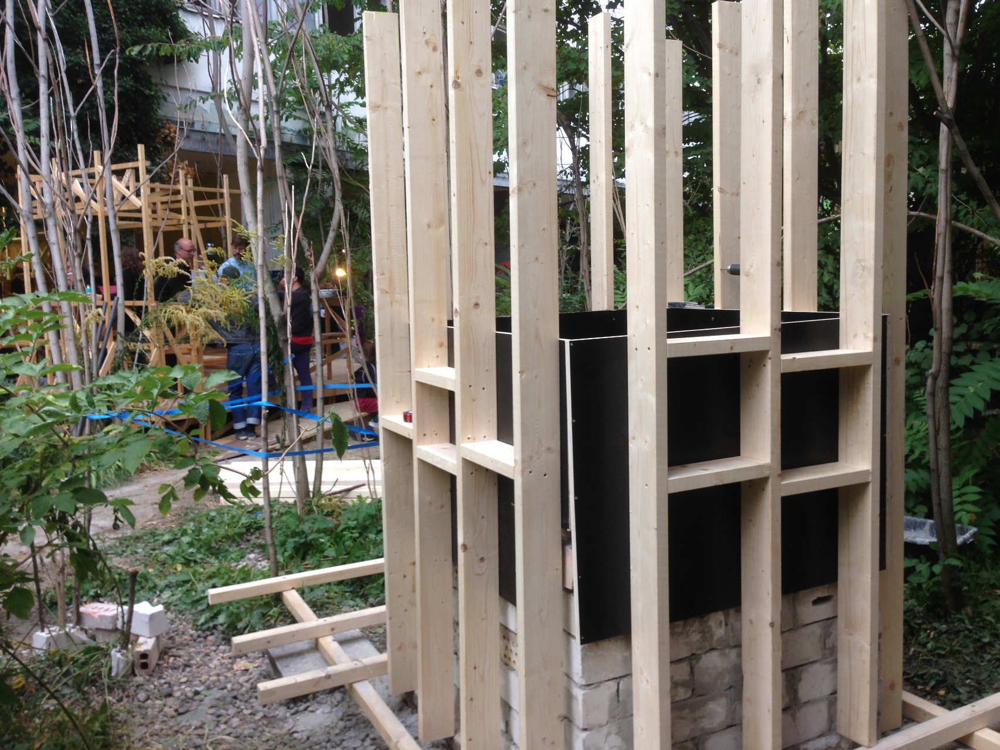

Haus der Statisik, Mitte, Berlin / 2019 / Collaboratively initiated by raumlabor and Berlin University of the Arts.
Over the course of two weeks, I was one of over 150 participants taking part in a diverse curriculum convened by practitioners in the field of spatial practices. "Acting as a non-disciplinary learning environment, the School proposes, designs, builds, negotiates, maintains, performs and celebrates an educational and convivial space in and around Haus der Statistik, Berlin. At the same time, it becomes a dynamic actor within a process of urban transformation, serving as a common sphere of action between participants, neighbours and civic society."
"Thinking beyond how to construct the future, we could begin by asking: What sustains the future as a construct in itself? A linear narrative of the future characterised by progress-driven, forward-facing expansion perpetuated by the West has brought us to our current “now”: An exhausted Earth. A Damaged Planet. A Broken World. The Anthropocene. The Racial Capitalocene.
Against this backdrop, spatial practices have long been complicit in furthering the fast-paced growth and speculation driven production of space. The construction sector, in particular, evidences a gross imbalance between the energy and matter it consumes and its capacity to repurpose it. And, in keeping with the ethos of neoliberalism, the field of architecture has immortalised the individualist, solution oriented “architect-hero”.
Why then convene a school for spatial practices to act now? And how to bring it into being? If the Bauhaus as a school was able to develop a striking thesis on the position of architecture and the architect in the society of the early 20th century, Making Futures School asks: how does architecture – and the architect – act in the society of the early 21st century in an accountable way? These questions overlap with the double perspective of the School, which views architecture as a collective form and architecture as a resource, examined from the perspectives of education and (future) spatial practice.
Making Futures School invites us to explore forms of productive cooperation, exchange, solidarity and living. Acting as a non-disciplinary learning environment, the School proposes, designs, builds, negotiates, maintains, performs and celebrates an educational and convivial space in and around Haus der Statistik, Berlin. By situating the School within a live construction site, Making Futures imbues itself within the transformation of a building, which in turn provides the impetus for other transformative processes: of the self and as a collective body.
The School is constituted by more than just a predetermined curriculum; when designing it we thought about the different elements, qualities and attributes that it should be composed of. This has meant developing its style and intensity; rethinking its mission and agency; considering the nature of its own ecology and the resources of its context; and reflecting upon its manifestation to its representation. When a school is conceived in this way, delivering a lecture, preparing a meal or building a bench all become acts of equal importance. The intention is to create a support structure – with ‘others’: wishing that this open form allows the unthinkable and the unprovable to emerge while at the same time provides a welcoming, nurturing and nourishing environment. How then to maintain small-scale intimacy while also being open for many to get involved?" - from Making Futures website.









